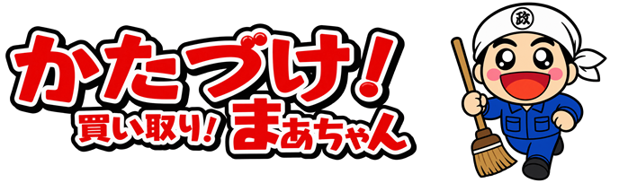

かたづけのこと、
まるごとお任せください。
はじめてのお片付けでも、心配な点がないようにしています。
私どもは古物商の許可を持っています。片付けの途中で出てきた貴金属やブランド品、まだ使える家電などを、その場で査定してお買取りできます。そのぶんを片付けの費用から差し引けますので、処分だけをお願いするより安く済むことがほとんどです。
古物商許可：福岡県公安委員会 第909990030823号
どれか一つでも当てはまれば、お電話ください。
ソファ、家具、家電、まとめて出た袋物まで。
1点から回収・処分仕分けが終わったあとに残る荷物を、まとめて片付けます。
荷物の後片付け値のつくものは、片付けの現場でそのまま拝見します。
その場で査定・買取り設置・取外しも承ります。リサイクル料もお見積書に書いて出します。
取外しもOK終活、生前整理、遺品整理、断捨離。どこから手をつければよいか分からない、という状態で構いません。まず見せていただくところからです。
お見積りまでは無料です。金額を見てからお決めください。
お電話、またはご来店でお聞かせください。おおよその間取りと、片付けたい範囲が分かると話が早いです。
現地を拝見して、何を残して何を処分するかを一緒に仕分けし、お見積りをお出しします。ここまで無料です。
金額にご納得いただけない場合は、お断りいただいて構いません。しつこくご連絡することはありません。
先にお金をいただくことはありません。買い取れるものがあれば、その分を差し引いてご精算します。
お見積りのあとに追加料金をいただくことは、基本的にありません。作業の内容を変える必要が出た場合は、必ず先にご説明してからにします。
お電話でよくいただくご質問をまとめました。
もちろんです。お見積りは無料ですし、金額を見てお断りいただいても費用はいただきません。
基本的にありません。作業の内容を変える必要が出た場合だけ、必ず先にご説明して、ご了承をいただいてから進めます。
できます。粗大ごみ1点からお受けしています。まとめてでなくて構いません。
その状態で結構です。伺って、残すものと処分するものを一緒に仕分けするところからお手伝いします。
その場で拝見します。16年買取をしてきた店ですので、処分される前にひととおり見せていただくと、値がつくものを残せます。
社名の入っていない車で伺うこともできます。ご相談ください。
筑紫野市二日市を中心に、太宰府市・小郡市・大野城市・春日市からもご依頼をいただいています。
古物商許可：福岡県公安委員会 第909990030823号
代表：安東 学